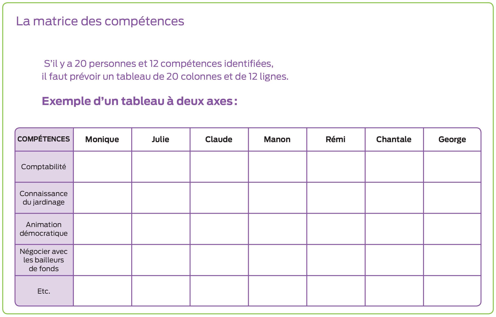

La matrice des compétences
Description sommaire
La matrice des compétences est un outil utilisé pour faire un portrait collectif des compétences déjà disponibles dans un groupe et celles qui sont à développer, ou encore à aller chercher à l’extérieur du groupe. C’est un exercice à réaliser collectivement après qu’un groupe de personnes a complété son plan d’action collectif et s’est engagé à le mettre en œuvre. On peut également l’utiliser pour relever un défi concret ou réaliser une action spécifique.
 Objectif principal
Objectif principal
de l’outil
 Étape du processus de
Étape du processus de
planification collective
 Les incontournables pour une rencontre réussie
Les incontournables pour une rencontre réussie
 Prérequis
Prérequis
Avoir un plan d’action et/ou des projets à mettre en œuvre.
 Matériel requis
Matériel requis
- Grandes feuilles
- Crayons-feutres
- Gommette
 Taille du groupe
Taille du groupe
Moyen
10-30
 Durée de l’animation
Durée de l’animation
60 à 70 minutes.
 La valeur ajoutée
La valeur ajoutée
J’ai utilisé cet exercice avec plusieurs comités de travail d’un même regroupement. Puisque leurs plans d’action étaient développés, ils avaient besoin de s’entendre encore plus spécifiquement sur ce qu’il y aurait à faire concrètement et de savoir s’ils avaient d’ores et déjà toutes les compétences requises pour assumer ces tâches et fonctions. Et si oui, qui serait en mesure de le faire. L’outil permet donc non seulement de bien se préparer à l’action, mais aussi de découvrir les compétences du groupe afin de les mettre concrètement à contribution dans l’action.
Sonia Racine
Conseillère en développement collectif
 Déroulement de l’animation
Déroulement de l’animation
Au début de chaque partie, il est suggéré d’expliquer les consignes en vous servant de ce que vous trouverez aux points suivants.
Étapes
1. Identifiez, avec les personnes présentes (ou en sous-groupes de travail), la liste de toutes les compétences requises pour réaliser les actions prévues (une liste par action ou projet). (20 à 30 min)
- Une question telle que « De quelles compétences aurons-nous besoin pour faire (telle chose)? » peut être un bon déclencheur pour amorcer la liste.
- Écrivez sur du papier-affiche les éléments qui ressortent pour que toutes et tous puissent voir le contenu au fur et à mesure du déroulement de l’activité.
2. Concevez la matrice (5 min)
- Une fois que toutes les compétences requises sont recensées, il faut concevoir un tableau à deux axes (ou ajouter des feuilles de papier-affiche à côté de celles déjà produites à l’étape 1) :
- Axe vertical : Chaque compétence identifiée
- Axe horizontal : Nom de chaque personne présente
S’il y a 20 personnes et 12 compétences identifiées, il faut prévoir un tableau de 20 colonnes et de 12 lignes.
Exemple

Remplissez la matrice (15 min)
- Invitez les participantes et participants :
- à mettre un « X » vis-à-vis leur propre nom lorsqu’ils possèdent la compétence identifiée (c'est-à-dire qu’ils ont déjà mis en œuvre cette compétence et sont en mesure de le faire à nouveau).
- À inscrire « XX » si la personne a atteint un niveau de compétence lui permettant de montrer à une autre personne comment l’acquérir.
- Cette partie de l’activité peut se faire collectivement, de façon très naturelle, pour permettre les échanges entre les participantes et participants qui en arriveront à se questionner mutuellement : « Crois-tu que je devrais mettre un X ici? » et à reconnaître les compétences des uns et des autres : « Tu es capable de faire ceci ou cela, tu devrais mettre un X ».
3. Analyse et conclusion (20 min)
- Invitez les gens à s’exprimer sur le résultat et à identifier :
- S’ils ont des compétences suffisantes dans le groupe pour accomplir le travail.
- S’ils doivent faire appel à d’autres personnes dans certaines sphères.
- L’acquisition de nouvelles compétences (par de la formation, du mentorat, etc.) ou la recherche de ressources humaines les possédant pourront être ajoutées au plan d’action au besoin.
 Pièges à éviter
Pièges à éviter
Il est nécessaire que le nombre d’actions soit « gérable » pour les participantes et participants. Pour être efficace, il faut éviter de faire une matrice des compétences à partir d’orientations générales, parce que les compétences qui en découlent ont tendance à être trop génériques pour être utilisables pour l’action (exemple : les compétences pour développer une collectivité). Pour être mobilisant et pertinent, cet exercice doit être complété par les personnes qui réaliseront le travail et non par des supérieurs ou des consultants externes.
 Suggestions et variantes
Suggestions et variantes
- L’activité est très malléable et peut être adaptée pour de plus grands groupes qui travailleront en sous-groupes (comités de travail responsables d’un certain nombre d’actions par exemple). Il suffit d’ajuster le déroulement pour permettre de traiter plusieurs actions ou projets. Elle peut également être adaptée pour de plus petits groupes.
- La première partie de l’outil peut aussi être utilisée en amont du processus de planification collective, pour déterminer qui devrait être présent pour faire une planification significative pour la collectivité. On se demandera alors quelles compétences sont requises pour l’exercice de planification à venir et on déterminera qui devrait être présent en fonction des compétences requises (ce qui inclut les connaissances).
 Référence
Référence
Télécharger la version PDF de l'outil
Inspiré d’une étape de travail de l’approche “Participative Design Workshop”. Pour plus d’information, voir Emery, Merrelyn (Ed) (1993) Participative Design for Participative Democracy. Canberra : Centre for Continuing Education, Australian National University. Pp.100-122.